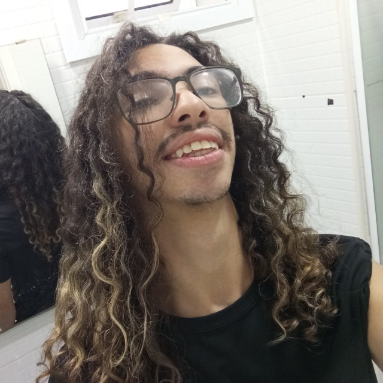

|
"E se o Ordem fosse um mundo Pós-Apocalíptico?"
"Eu sou um grande fã de mundos pós-apocalípticos e universos originais. Por isso, pode
ser que você acabe encontrando algumas semelhanças/referências com jogos e séries
como Hora de Aventura, The Last Of Us, The Walking Dead, Avatar (Aang/Korra), SCP
Foundation, Hollow Knight, The Witcher, Mitologias, entre outros."
- Diego Vitali
|

|
O Distopia surgiu como uma continuação de uma campanha de RPG de Mesa criada e narrada pelo criador. No entanto, o mundo foi planejado desde seu início para ser um universo novo que, ao mesmo tempo que continuaria as histórias anteriores, seria independente delas.
Nascido para ser um mundo rico, o Distopia crescia a cada sessão narrada. Apesar de ter sido conceituado por uma única pessoa, este mundo fora escrito em conjunto por um grupo de amigos que contavam suas próprias histórias e, aos poucos, expandiam ainda mais essa criação.
|